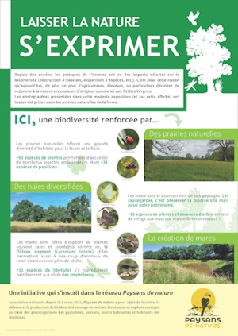
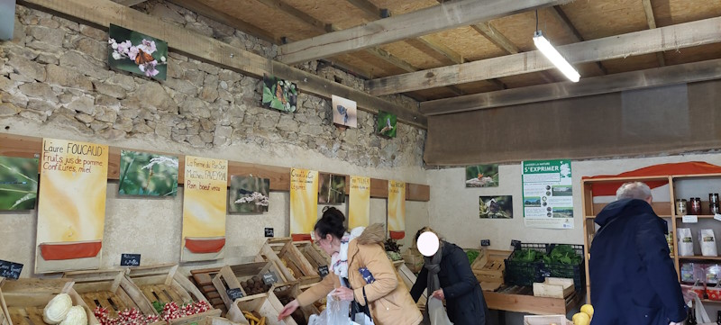

Cette exposition s'inscrit dans le cadre de mon stage en BTS GPN comme une conclusion aux missions effectuées à la Ferme du Pain’Son en Vendée.
L’objectif initial était de réaliser un inventaire floristique et faunistique sur trois parcelles de prairies fourragères naturelles (deux prairies humides et une prairie plus sèche). L’intérêt était de faire ressortir la qualité de ces parcelles grâce à la biodiversité qu’elles contiennent.
Ces parcelles ont l’avantage de n’avoir aucun traitement chimique car l’exploitation est en agriculture biologique.
L’affiche réalisée pour l’exposition résume bien les résultats de ces inventaires :
Pourquoi une exposition ?
L’exploitant de la ferme cherchait un moyen de valoriser ses produits auprès des clients de son marché.
Une exposition photographique c’est à la fois une manière simple et efficace de transmettre des informations sur un environnement local, et c’est aussi un bon moyen pour faire réfléchir les visiteurs à pourquoi les espèces présentées sont mises en avant.
C’était aussi une très bonne opportunité pour moi, photographe amateur, d’exposer autrement que sur les réseaux mes clichés.
L’exposition s’est tenue sur plusieurs mois dans le marché de l’exploitation.
